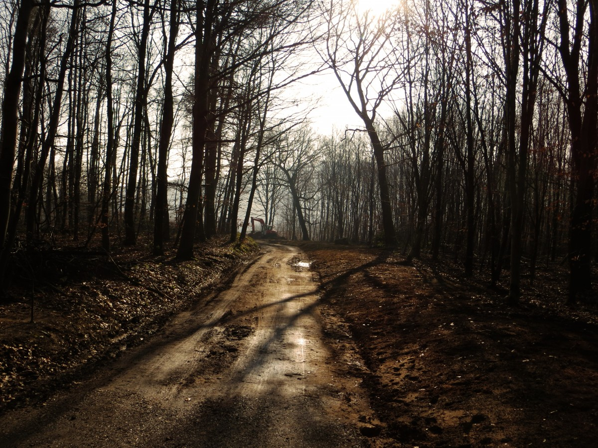
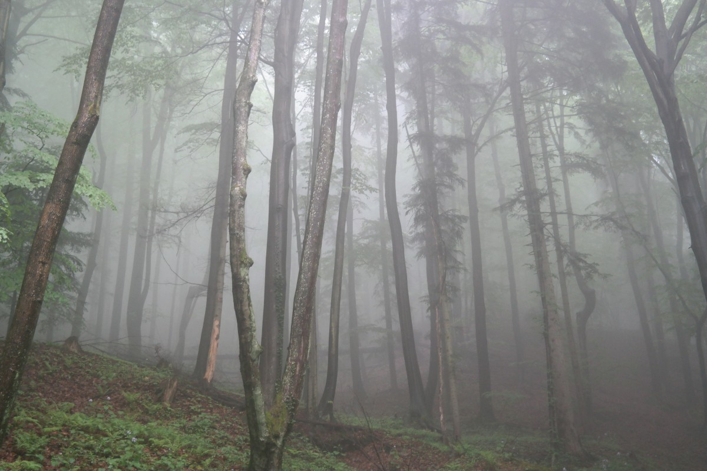
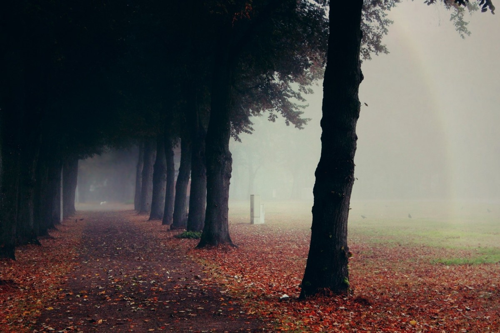

As trilhas são indicadas para serem feitas nos meses em que não há neve. Nos que há, conheça nossos eventos.
Conhecida pelo uivo dos lobos que vivem ao redor. Perigosa, mas se você segue o espiríto dos lobos, conseguirá manter-se a salvo.
Ótima para ser feitas por aventureiros em grupo que gostam de se aventurar e se inspirar no espírito da alcateia.
Sabendo-se que os lobos não podem ser domesticados, esta trilha é para aqueles que são independentes e autosuficientes e prontos a tomar decisões difícies.
